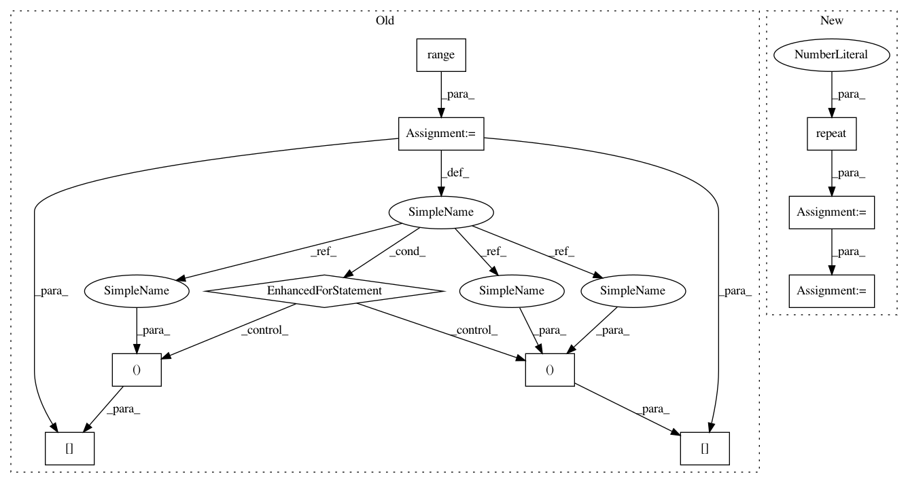

9e89e0a6576c8ae04ce97c296fe8fd9dc5ee419f,scanpy/graph.py,DataGraph,compute_C_matrix,#DataGraph#,352
Before Change
matrix in \mathbb{R}^n.
self.C = np.zeros(self.Lp.shape)
for i in range(self.Lp.shape[0]):
for j in range(self.Lp.shape[1]):
self.C[i, j] = self.Lp[i, i] + self.Lp[j, j] - 2*self.Lp[i, j]
volG = np.sum(self.z)
self.C *= volG
sett.mt(0,"computed commute distance matrix")
self.Dchosen = self.C
After Change
This is the commute-time matrix. It"s a squared-euclidian distance
matrix in \mathbb{R}^n.
self.C = np.repeat(np.diag(self.Lp)[:, np.newaxis],
self.Lp.shape[0], axis=1)
self.C += np.repeat(np.diag(self.Lp)[np.newaxis, :],
self.Lp.shape[0], axis=0)
self.C -= 2*self.Lp
// the following is much slower
// self.C = np.zeros(self.Lp.shape)
// for i in range(self.Lp.shape[0]):
// for j in range(self.Lp.shape[1]):
In pattern: SUPERPATTERN
Frequency: 3
Non-data size: 10
Instances
Project Name: theislab/scanpy
Commit Name: 9e89e0a6576c8ae04ce97c296fe8fd9dc5ee419f
Time: 2017-02-13
Author: f.alex.wolf@gmx.de
File Name: scanpy/graph.py
Class Name: DataGraph
Method Name: compute_C_matrix
Project Name: theislab/scanpy
Commit Name: 9e89e0a6576c8ae04ce97c296fe8fd9dc5ee419f
Time: 2017-02-13
Author: f.alex.wolf@gmx.de
File Name: scanpy/graph.py
Class Name: DataGraph
Method Name: compute_C_matrix
Project Name: cornellius-gp/gpytorch
Commit Name: 9b664bd7cd8dbb9657626166ba61887ed06774d7
Time: 2017-09-13
Author: gpleiss@gmail.com
File Name: gpytorch/utils/toeplitz.py
Class Name:
Method Name: index_coef_to_sparse
Project Name: batra-mlp-lab/visdial-challenge-starter-pytorch
Commit Name: 67addeaef37856340f2d220af9a7cad3c4256235
Time: 2019-01-03
Author: karandesai281196@gmail.com
File Name: visdialch/decoders/disc.py
Class Name: DiscriminativeDecoder
Method Name: forward